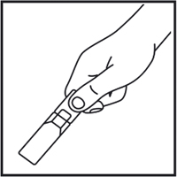
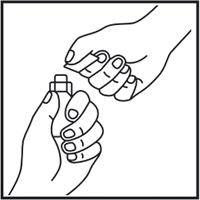
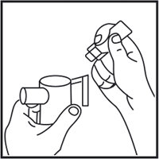

|
 |
| ИНГАСАЛИН® ФОРТЕ (INGASALIN FORTE) р-р д/ингаляций гипертонический стерильный | ||||||||
|
Номер и дата регистрации: РЗН 2018/7618 от 14.09.18 Групповая принадлежность: Медицинское изделие для ингаляций |
Владелец регистрационного удостоверения: зарегистрировано и произведено Представительство: | |||||||
Форма выпуска, состав и упаковка Раствор для ингаляций гипертонический стерильный 7% прозрачный, бесцветный или слегка окрашенный.
Вспомогательные вещества: вода д/и - до 1 мл. 5 мл - ампулы из полиэтилена низкой плотности (5) - пакеты из пленки фольгированной (6) - пачки картонные. | ||||||||
| ||||||||
Описание препарата основано на официально утвержденной инструкции по применению и утверждено компанией-производителем для издания 2022 г. | ||||||||
Свойства |
Область применения |
Рекомендации по применению |
Побочное действие |
Противопоказания |
Беременность и лактация |
Особые указания |
Передозировка |
Лекарственное взаимодействие |
Условия хранения и сроки годности |
Условия реализации
Свойства
Раствор Ингасалин® форте предназначен для ускорения отхождения вязкого секрета (мокроты) в дыхательных путях благодаря осмотическому механизму. Высокая концентрация соли притягивает воду и способствует регидратации бронхиальной слизи. Гиалуроновая кислота (натрия гиалуронат) - компонент в составе средства Ингасалин® форте, обладает способностью связывать большое количество молекул воды и удерживать их в межфибриллярном пространстве, участвует в защитных механизмах, стимулируя движения ресничек, защищает ткань легких от пагубного воздействия ферментов. Благодаря наличию гиалуроновой кислоты в составе средства Ингасалин® форте значительно улучшается переносимость и приверженность пациентов к терапии. Ингасалин® форте особенно показан пациентам с муковисцидозом и бронхоэктазами. Медицинское изделие Ингасалин® форте предназначено для самостоятельного применения в домашних условиях, а также для использования в лечебно-профилактических учреждениях. Область применения
Заболевания дыхательной системы, которые сопровождаются затрудненным отделением вязкого секрета (мокроты) в дыхательных путях:
Рекомендации по применению
Рекомендуется использовать любой струйный или мембранный небулайзер. Дыхание должно быть в нормальном темпе на протяжении ингаляционной терапии, которая длится около 10 мин. Для ингаляции следует использовать раствор комнатной температуры. Применяют по 1 ампуле (4 или 5 мл) раствора 2 раза/сут или соответственно предписанию врача. Лечение можно начать с меньшего количества раствора и увеличивать дозу постепенно. Порядок работы с раствором 1. Перед использованием раствора необходимо прочитать инструкцию производителя небулайзера. 2. Подготовить небулайзер согласно инструкции производителя. 3. Взять ампулу и встряхнуть ее, удерживая за горлышко (рис. 1).  4. Сдавить ампулу рукой, при этом не должно происходить выделение раствора, и вращающими движениями повернуть и отделить клапан (рис. 2).  5. Выдавить раствор в резервуар небулайзера (рис. 3).  6. Использовать небулайзер согласно инструкции его производителя. 7. Раствор, оставшийся неиспользованным в камере небулайзера, следует выливать сразу же после каждого использования. 8. Тщательно вымыть небулайзер. Необходимо следовать инструкции по применению, обслуживанию и чистке небулайзера. Применение при беременности и кормлении грудью
Нет данных о применении средства Ингасалин® форте при беременности и в период грудного вскармливания. Особые указания
Раствор относится к изделиям индивидуального и однократного применения. Ингасалин® форте предназначен только для ингаляций. Первое применение раствора должно происходить под контролем врача или квалифицированного персонала. Использование раствора детьми должно происходить под контролем взрослого. Особенно чувствительным к раствору людям в начале лечения рекомендуется премедикация бронхолитическими средствами, которые помогают предотвратить бронхоспазматические реакции. Премедикация бронхолитическими средствами должна проводиться под контролем врача. В случае приступа бронхоспазма или непрекращающегося кашля пациенту необходимо прервать лечение и сообщить об этом лечащему врачу. Не следует использовать раствор, если во время первого вскрытия ампулы было замечено, что она повреждена или неплотно закрыта. Не следует использовать оставшееся содержимое ампулы повторно. Не следует смешивать гипертонический раствор с другими препаратами. Порядок осуществления утилизации Допускается утилизировать изделие (в т.ч. неиспользованный раствор) в соответствии с СанПиН 2.1.7.2790 как отходы класса А (эпидемиологически безопасные отходы, приближенные по составу к твердым бытовым отходам). Влияние на способность к управлению транспортными средствами и механизмами Маловероятно влияние на способность управлять транспортом, работать с механизмами и заниматься другими потенциально опасными видами деятельности при правильном применении раствора. Ингасалин® форте не относится к изделиям, способным влиять на психомоторное состояние человека. Лекарственное взаимодействие
Использование каких-либо лекарственных препаратов одновременно с раствором допускается только под наблюдением врача. |
||||||||
Вернуться наверх |
||||||||
Copyright © Справочник Видаль «Лекарственные препараты в России», Москва, Россия